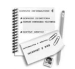

| PRODUCTOS DISPONIBLES Cuadernos Lapiceros Sacapuntas Crayones Libros de Lectura Juegos de Geometria Legos Tableros Lana Goma Marcadores Blocks Hojas Carta y oficio Folders Ganchos Papel Lustre Papel China Papel Celofan Tape Maskin Tape Yeso Tinta para Marcadores Etc... | Libreria la esperanza |
| "Libreria Esmeralda" es una libreria que abre sus puertas al público en 1988 y cuenta en la actualidad con 5 sucursales en toda la república. Desde 1989, en colaboración con la municipalidad organizamos la Feria del Lápiz, durante los días del 30 de septiembre al 16 de octubre, ambos inclusive, en horario de 11 de la mañana a 9 de la noche, ininterrumpidamente, en el Paseo San Juan.  | |
| 5a calle 11-50 zona 10, Tels.: 2658-9874/76/78 Fax: 2658-9881/83 Web: www.libreriaesmeralda.com.gt e-mail: contactos@breriaesmeralda.com.gt Guatemala, C.A |